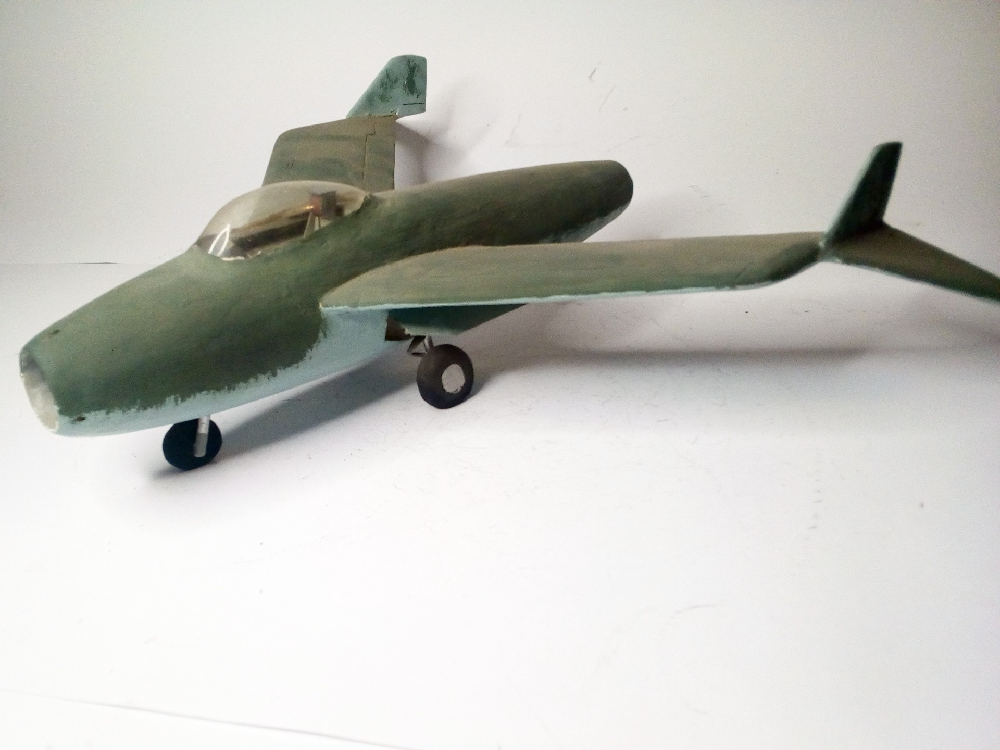
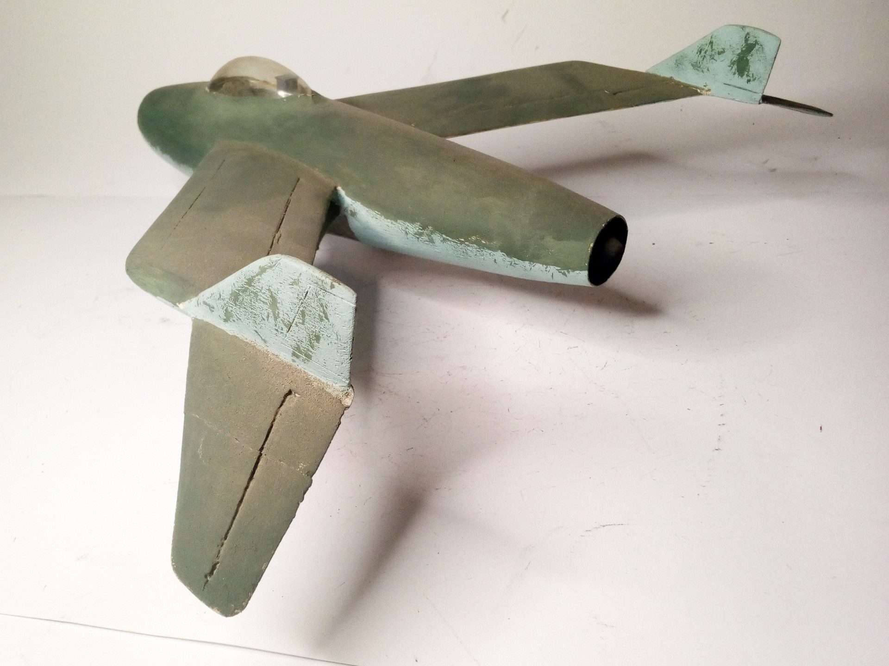

Aerei · scale model archive
Blohm und Voss P212
Blohm und Voss P212 — Kit: Scratchbuilt, Scale: 1/32. Late war jet fighter project, for the 'Jaegernot Programme' in 1945 for a single jet emergency…

Photo gallery

English description
Late war jet fighter project, for the 'Jaegernot Programme' in 1945 for a single jet emergency fighter.
#1/32 #Scratchbuilt #P212
Descrizione italiana
Progetto di caccia a reazione di fine guerra, pensato per il “Jägernotprogramm” del 1945 come caccia monoreattore d’emergenza.